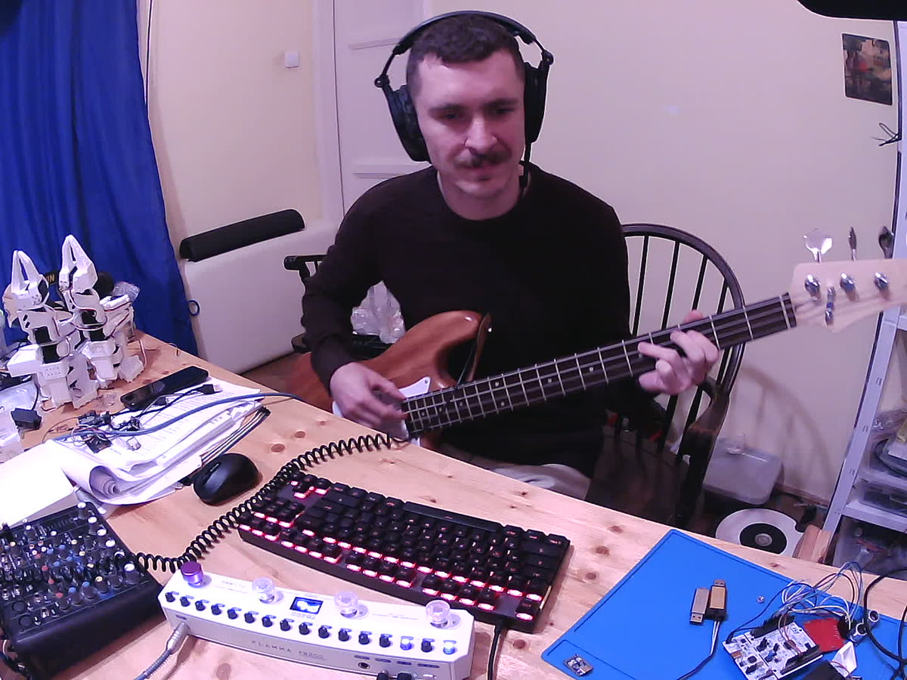

Open firmware for the FLAMMA FB200
A replacement firmware for the FB200 bass multi-effects pedal. It sounds like the stock firmware, keeps your presets and the official app working, and adds what the stock firmware does not have.
Chrome or Edge on Windows, macOS, Linux or ChromeOS. Nothing to install.

What it does
Same sound
Every stock effect is ported and checked against the stock DSP: noise gate, compressor, 10 amp models, tone stack, 10 cab IRs, 9 user IR slots, 12 modulations, 5 reverbs.
Your presets stay
Presets, settings and user IRs load and save in the stock format. They survive a switch to this firmware and back.
USB updates
After the first install, updates go over USB with no button combo. A recovery stage keeps USB working after a crash or a hang.
Better feedback
The display names the knob you turn (GAn, CAb) and marks knobs
that have not picked up the preset value yet.
Drums
The stock drum machine, on time, and included in the USB recording. Hold A and turn LEVEL, RATE or MOD for drum level, tempo or rhythm.
USB audio and console
A class-compliant audio interface (44.1 kHz), plus a USB console for diagnostics and crash reports.
Controls
The controls work as on the stock firmware.
| Action | What it does |
|---|---|
| A / B / C / D | Select slot A to D of the current bank (display P<bank><slot>) |
| C + D / A + B | Bank up / bank down |
| B + C | Stomp mode (L…): A = reverb, B = mod, C = amp and cab, D = comp on/off |
| Hold A (1 s) | Save the current preset |
| Hold B, then A long | Tuner (display: flat arrow, note, sharp arrow). Any switch exits. |
| Hold C, then B long | Rhythm mode: A play/stop, B/C previous/next rhythm, D tap tempo |
| Hold A + turn LEVEL / RATE / MOD | Drum level / tempo / rhythm, live |
Knobs, left to right: MASTER, LEVEL (reverb), REVERB, MIX, RATE, MOD, CAB, VOL, BASS, MID, TREBLE, GAIN, AMP, LEVEL (comp), THRESH, GATE.
After a preset loads, a knob takes over when it passes the preset's value. Until then its LED blinks and the display shows the value with a dot.
Install
You need the pedal, a USB cable, Chrome or Edge on a computer, and the official FB200
firmware file from FLAMMA (FB200_V1.0.1.mr). The updater takes the sound data and
the loader from your copy of that file, in your browser. It never uploads it.
Holding A+D while you plug in USB always starts the pedal's own update mode. From there you can go back to the stock firmware at any time.
Documentation
- Install, update, recovery, back to stock
- Stock feature list and status
- Boot chain and flash layout
- USB and Bluetooth protocol
- Project README
Support
The project is free and stays free. If it is useful to you, you can buy me a coffee.
Disclaimer
This is an independent community project. It is not affiliated with, endorsed by, or supported by FLAMMA Innovation or MOOER Audio. All product names and trademarks belong to their owners.
Flashing custom firmware is at your own risk. The procedure is tested on one pedal (stock firmware V1.0.1). Read the full disclaimer.